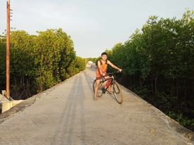

WELCOME TO MY BLOG!

Hi, I am Israel A. Inting
My life is full of abundant of blessings that I really appreciated and never been disappointed of everything. I have a lot of experiences and lessons that brings me to the top and become a warrior in facing any hardships, it makes me strong and brave. Beside of that I have hobbies that gives me happiness and help me save from every unexpected bad days. Whenever I get sad I just sleep or rest my mind and body, I am just doing like meditation for me to relax and to keep the sadness away from me. I love dancing and dancing really lessen my boredom. Dancing creates a kind of feelings or moods that can provide something I really want to have. Indeed, this help me to be more active and healthy because it is a type of exercise as well. I do biking too during the sunsets at our coastal road. Biking makes you feel relax and free that when a breeze hits on you, it's like you are flying up in the sky. Especially if you are biking near coastal with so much mangroves because that's really where most air is released and can feels a cooling breezing air. I love editing videos too and I starts interest in editing when I am at first year college. It is my dream to be an video editor when I was in highschool but because of having no gadget I was losing to pursue it. But now that I had a smartphone I take my chances to do it and make my dreams happen.
These are a lot of my personal life that I will cherish everyday. I should proud of it whatever it takes and whether if it is good or bad I will appreciate it as this is part of my life. These are my life, my personal things that tells me who I am. I can be anyone but the most valuable of all is being a person of who you are.
Comments